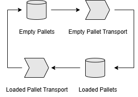

The QuokkaSim Book
Welcome to the QuokkaSim Book – your guide to learning and mastering QuokkaSim, the Rust-based discrete-event simulation framework.
As of the 18th September 2025, QuokkaSim is at version
0.2.2, with development underway for version0.3.0. The new version will include a large restructure of the QuokkaSim API and will cause breaking changes. The current estimated release date is late October 2025.These changes aim to:
- Make it easier to create and integrate custom resources and components
- Make compile-time errors more useful by relying more heavily on Rust traits instead of macros
Current changes for
0.3.0can be found on the refactor/v3 branch.
What is QuokkaSim?
QuokkaSim is a high-performance, event-driven simulation framework written in Rust, on top of the NeXosim simulation engine.
QuokkaSim is also:
- Open source
- Permissively licensed (via the MIT License)
- Memory-safe
- Highly performant, via the NeXosim crate
- Accessible to new simulation modellers and new Rust developers
Who should read this book?
This book is written primarily for new and experienced simulation modellers, who are new to the Rust programming language and NeXosim simulation engine. The aim of this book (and QuokkaSim more generally) is to provide a structured way to learn QuokkaSim with as minimal friction as possible with the Rust compiler.
For new simulation modellers:
- Chapter 1: Getting Started is a Quick Start Guide to running and modifying your first QuokkaSim model.
- Chapter 2: A Conceptual Overview explores the specific concepts used by QuokkaSim, with the aim of new users being able to map real-world scenarios into QuokkaSim concepts, even before touching the code.
- Chapter 3: Building Your Simulation Model dives into the code, guiding you through how to navigate parsing through an example simulation, and building your own.
- Chapter 4: Examples summarises a number of example QuokkaSim models, which can be referenced for how to implement different types of custom logic and features.
FAQ
Why does QuokkaSim use Rust?
-
Incredible performance without the need to write plain C code
-
Building with Rust means we can make QuokkaSim free, open source and permissively licensed, to democratise simulation software - making world-class simulation modelling accessible beyond those with licenses to proprietary software.
-
Rust's strict compiler ensures all possible cases are explicitly handled and enforces the principle of making impossible states unrepresentable. This aligns perfectly with simulation modeling, where defining clear rules and handling unforeseen edge cases is crucial for reliable extrapolation beyond empirical data and known behaviours.
-
Rust is the world's most admired programming language, and has maintained this status for the last 8 years
Why choose QuokkaSim over SimPy?
Two main points:
- Performance - plain and simple. Faster performance and a smaller memory footprint means not only faster model development and scenario runs, but also unlocks many more opportunities for use e.g. integrations into ML models, embedment in web applications etc.
- Maintainability especially for larger simulation models. Different from SimPy, QuokkaSim provides a comprehensive framework of components that can be used as-is, or extended by defining custom components, and also benefits from the strictness of Rust's compiler and borrow checker, to provide modellers less time debugging 'plumbing' issues, and more time on business logic and features.
Yes, this FAQ is bare. Please let JJ know if you have any questions - I'd like to add more to this section!
Chapter 1: Getting Started
Welcome to your first QuokkaSim simulation! In this chapter you will
- Install Rust
- Create a new Rust project
- Add QuokkaSim as a dependency
- Write and run a minimal "hello world" simulation
1.1. Install Rust
Follow the instructs on the Rust Lang website to install Rust on your operating system. These instructions will help you install:
rustup, the Rust installer, andcargo, the Rust package manager
To check if installation is successful, use cargo -V to check which version of Cargo you have installed.
1.2. Create a new Rust project
If you don’t already have a project, open a terminal and run:
cargo new hello‐quokkasim
cd hello‐quokkasim
This creates a fresh binary crate with src/main.rs.
1.3. Add QuokkaSim to Cargo.toml
To add QuokkaSim as a dependency, use cargo add quokkasim or add the following to your Cargo.toml file before running cargo fetch:
[dependencies]
quokkasim = "0.3.0-alpha"
1.4. Write your first Simulation
In your main.rs file, paste the following imports which will be used in this example.
#![allow(unused)] fn main() { use quokkasim::prelude::*; use std::time::{Duration, SystemTime}; }
Next we create the individual interactive components of our simulation

Empty Pallets hold a discrete number of pallets, which Empty Pallet Transport moves at specific times, into Loaded Pallets. In reality there may be a specific process to load material onto the pallets, but we will consider this negligible for the sake of example. Loaded Pallet Transport then moves pallets to Empty Pallets and the cycle continues.
Add the following into the main() function to create these components, and to connect them together.
#![allow(unused)] fn main() { let mut df = DistributionFactory::new(97531); let mut empty_pallets: DefaultDiscStock<i32, DiscStockState, DiscStockLog<i32>> = DefaultDiscStock::new() .with_name("EmptyPallets") .with_code("EP") .with_initial_resources(vec![0,1,2,3].into()); let (empty_pallets_mbox, empty_pallets_addr) = empty_pallets.create_mailbox(); let mut empty_pallet_transport = DefaultDiscProcess::new() .with_name("EmptyPalletTransport") .with_code("EPT") .with_process_time_distr(df.create(DistributionConfig::Exponential { mean: 60.0 }).unwrap()); let (empty_pallet_transport_mbox, empty_pallet_transport_addr) = empty_pallet_transport.create_mailbox(); let mut loaded_pallets: DefaultDiscStock<i32, DiscStockState, DiscStockLog<i32>> = DefaultDiscStock::new() .with_name("FullPallets") .with_code("FP") .with_initial_resources(vec![4,5,6,7].into()); let (loaded_pallets_mbox, loaded_pallets_addr) = loaded_pallets.create_mailbox(); let mut loaded_pallet_transport = DefaultDiscProcess::new() .with_name("FullPalletTransport") .with_code("FPT") .with_process_time_distr(df.create(DistributionConfig::Exponential { mean: 120.0 }).unwrap()); let (loaded_pallet_transport_mbox, loaded_pallet_transport_addr) = loaded_pallet_transport.create_mailbox(); // Connections let mut c = Connection {}; c.connect((&mut empty_pallets, &empty_pallets_addr), (&mut empty_pallet_transport, &empty_pallet_transport_addr)).unwrap(); c.connect((&mut empty_pallet_transport, &empty_pallet_transport_addr), (&mut loaded_pallets, &loaded_pallets_addr)).unwrap(); c.connect((&mut loaded_pallets, &loaded_pallets_addr), (&mut loaded_pallet_transport, &loaded_pallet_transport_addr)).unwrap(); c.connect((&mut loaded_pallet_transport, &loaded_pallet_transport_addr), (&mut empty_pallets, &empty_pallets_addr)).unwrap(); }
Next we'll add some Logger instances to report on what occurs during the simulation, and connect them to our Process and Stock components.
#![allow(unused)] fn main() { let process_logger = EventQueue::<DiscProcessLog<i32>>::new(); empty_pallet_transport.log_emitter.connect_sink(&process_logger); loaded_pallet_transport.log_emitter.connect_sink(&process_logger); let stock_logger = EventQueue::<DiscStockLog<i32>>::new(); empty_pallets.log_emitter.connect_sink(&stock_logger); loaded_pallets.log_emitter.connect_sink(&stock_logger); }
Then we create our Simulation object sim, which controls the progression of the simulation.
#![allow(unused)] fn main() { let sim_init = SimInit::new() .add_model(empty_pallets, empty_pallets_mbox, "EP") .add_model(empty_pallet_transport, empty_pallet_transport_mbox, "EPT") .add_model(loaded_pallets, loaded_pallets_mbox, "FP") .add_model(loaded_pallet_transport, loaded_pallet_transport_mbox, "FPT"); let start_time = MonotonicTime::try_from_date_time(2025, 7, 1, 0, 0, 0, 0).unwrap(); let duration = Duration::from_secs(3600); let (mut sim, _) = sim_init.init(start_time).unwrap(); }
We send and initialisation events, tell our simulation to run for an hour, and prints the results. Some logic is also included to view the model execution time.
#![allow(unused)] fn main() { let time_at_start = SystemTime::now(); sim.step_until(start_time + duration).unwrap(); let time_at_end = SystemTime::now(); // Output logs for log in process_logger.into_reader() { println!("{:?}", log); } for log in stock_logger.into_reader() { println!("{:?}", log); } println!("Execution time: {:?}", time_at_end.duration_since(time_at_start)); }
Our main.rs file is now complete (or refer to the Full Code below if you think you're missing something).
Finally, use cargo run to run the simulation. If you see data logs in the terminal instead of errors, you're done! You can also try a production build and run by using cargo run --release, and compare the difference compilation and execution times.
1.5. Exercises
Want to start playing around immediately? Here are some ideas of things you can try before moving on with the rest of the book!
- 1 hour is simulated to begin with. What if we simulate for longer?
- What happens if all the pallets begin at Empty Pallets?
- What happens if there can only be up to 2 pallets at a time in Loaded Pallets? You can use the
.with_max_capacitymethod of the stock to configure this.
Full Code
use quokkasim::prelude::*; use std::time::{Duration, SystemTime}; fn main() { // Components let mut df = DistributionFactory::new(97531); let mut empty_pallets: DefaultDiscStock<i32, DiscStockState, DiscStockLog<i32>> = DefaultDiscStock::new() .with_name("EmptyPallets") .with_code("EP") .with_initial_resources(vec![0,1,2,3].into()); let (empty_pallets_mbox, empty_pallets_addr) = empty_pallets.create_mailbox(); let mut empty_pallet_transport = DefaultDiscProcess::new() .with_name("EmptyPalletTransport") .with_code("EPT") .with_process_time_distr(df.create(DistributionConfig::Exponential { mean: 60.0 }).unwrap()); let (empty_pallet_transport_mbox, empty_pallet_transport_addr) = empty_pallet_transport.create_mailbox(); let mut loaded_pallets: DefaultDiscStock<i32, DiscStockState, DiscStockLog<i32>> = DefaultDiscStock::new() .with_name("FullPallets") .with_code("FP") .with_initial_resources(vec![4,5,6,7].into()); let (loaded_pallets_mbox, loaded_pallets_addr) = loaded_pallets.create_mailbox(); let mut loaded_pallet_transport = DefaultDiscProcess::new() .with_name("FullPalletTransport") .with_code("FPT") .with_process_time_distr(df.create(DistributionConfig::Exponential { mean: 120.0 }).unwrap()); let (loaded_pallet_transport_mbox, loaded_pallet_transport_addr) = loaded_pallet_transport.create_mailbox(); // Connections let mut c = Connection {}; c.connect((&mut empty_pallets, &empty_pallets_addr), (&mut empty_pallet_transport, &empty_pallet_transport_addr)).unwrap(); c.connect((&mut empty_pallet_transport, &empty_pallet_transport_addr), (&mut loaded_pallets, &loaded_pallets_addr)).unwrap(); c.connect((&mut loaded_pallets, &loaded_pallets_addr), (&mut loaded_pallet_transport, &loaded_pallet_transport_addr)).unwrap(); c.connect((&mut loaded_pallet_transport, &loaded_pallet_transport_addr), (&mut empty_pallets, &empty_pallets_addr)).unwrap(); // Loggers let process_logger = EventQueue::<DiscProcessLog<i32>>::new(); empty_pallet_transport.log_emitter.connect_sink(&process_logger); loaded_pallet_transport.log_emitter.connect_sink(&process_logger); let stock_logger = EventQueue::<DiscStockLog<i32>>::new(); empty_pallets.log_emitter.connect_sink(&stock_logger); loaded_pallets.log_emitter.connect_sink(&stock_logger); // Simulation initialisation let sim_init = SimInit::new() .add_model(empty_pallets, empty_pallets_mbox, "EP") .add_model(empty_pallet_transport, empty_pallet_transport_mbox, "EPT") .add_model(loaded_pallets, loaded_pallets_mbox, "FP") .add_model(loaded_pallet_transport, loaded_pallet_transport_mbox, "FPT"); let start_time = MonotonicTime::try_from_date_time(2025, 7, 1, 0, 0, 0, 0).unwrap(); let duration = Duration::from_secs(3600); let (mut sim, _) = sim_init.init(start_time).unwrap(); let time_at_start = SystemTime::now(); sim.step_until(start_time + duration).unwrap(); let time_at_end = SystemTime::now(); // Output logs for log in process_logger.into_reader() { println!("{:?}", log); } for log in stock_logger.into_reader() { println!("{:?}", log); } println!("Execution time: {:?}", time_at_end.duration_since(time_at_start)); }
Chapter 2: Rust Prerequisites
Basics you'll need to build anything in Rust...
- Primitive data types, Structs, Enums, Collections
- Control flow (if/else, match, for, loop etc.)
You'll want to know how to use (but not necessarily create)...
- Structs/functions with generic type arguments
- Traits, including overriding default methods, and a basic understanding of standard traits e.g. Debug, Clone, Serialise
- Async/await syntax, at a very basic level, and the Send and Sync traits
- The 'static lifetime
| Documentation and Articles | Videos |
|---|---|
| The Rust Book | Rust makes you feel like a GENIUS (10:47) |
| Rust for the impatient (10:42) | |
| Rust: Generics, Traits, Lifetimes (35:33) |